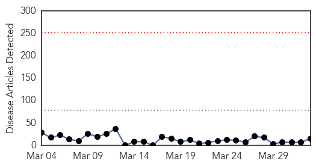
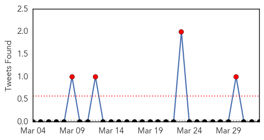
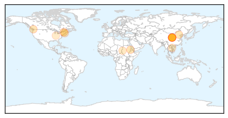
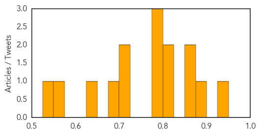

Chikungunya
30-Day Web Trend
0 alerts, 0 warnings

30-Day Twitter Trend
0 alerts, 0 warnings

Article Locations

Article Confidences

Top Articles:
Top Tweets:
-
No tweets found for Apr 02, 2015
Measles
30-Day Web Trend
0 alerts, 0 warnings

30-Day Twitter Trend
1 alerts, 0 warnings

Article Locations
Article Confidences
Top Articles:
- 0.947
- Our Opinion: Opting not to vaccinate puts others at risk
- 0.888
- Sudan: UNICEF launches measles vaccination campaign after outbreak
- 0.870
- 2 new measles cases confirmed in Metro Vancouver
- 0.870
- 2 new measles cases confirmed in Metro Vancouver
- 0.819
- Burnaby high school student latest confirmed measles case: Fraser Health - BC
- 0.816
- Two more measles cases pop up in Metro Vancouver
- 0.791
- Mandatory vaccination will protect all citizens
- 0.791
- Suspected measles case identified at Vancouver high school
- 0.791
- Suspected measles case identified at Vancouver high school
- 0.705
- Vancouver School Board sets up immunization clinic after student contracts measles
- 0.702
- Two million measles vaccines delivered to Sudan for mass immunisation
- 0.687
- Laos introduces vaccine to protect children from Japanese encephalitis
- 0.641
- Get vaccinated
- 0.572
- Four Burnaby Christian school students infected with measles
- 0.530
- Updated: More measles cases linked to Air China flight
Top Tweets:
-
No tweets found for Apr 02, 2015